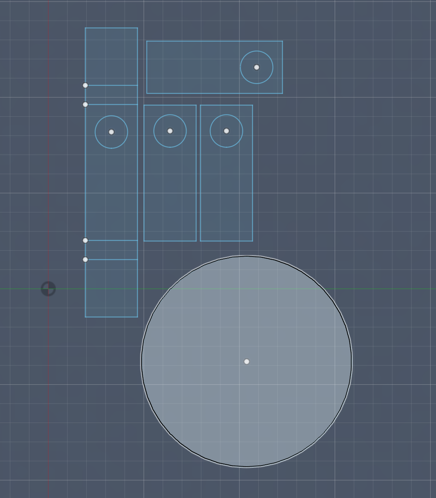
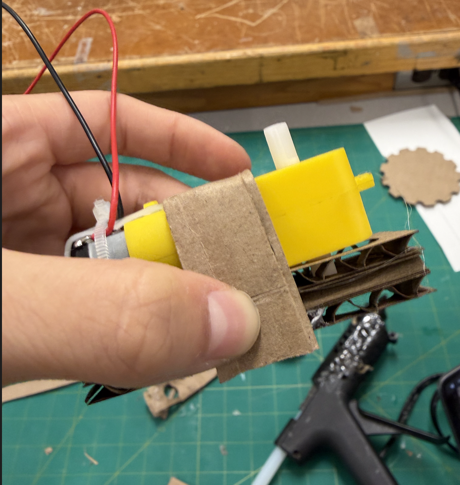
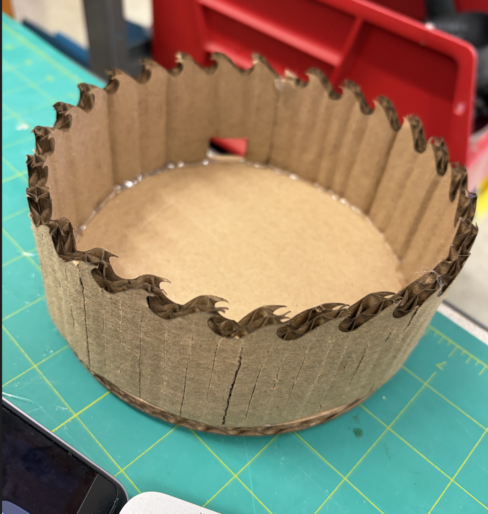
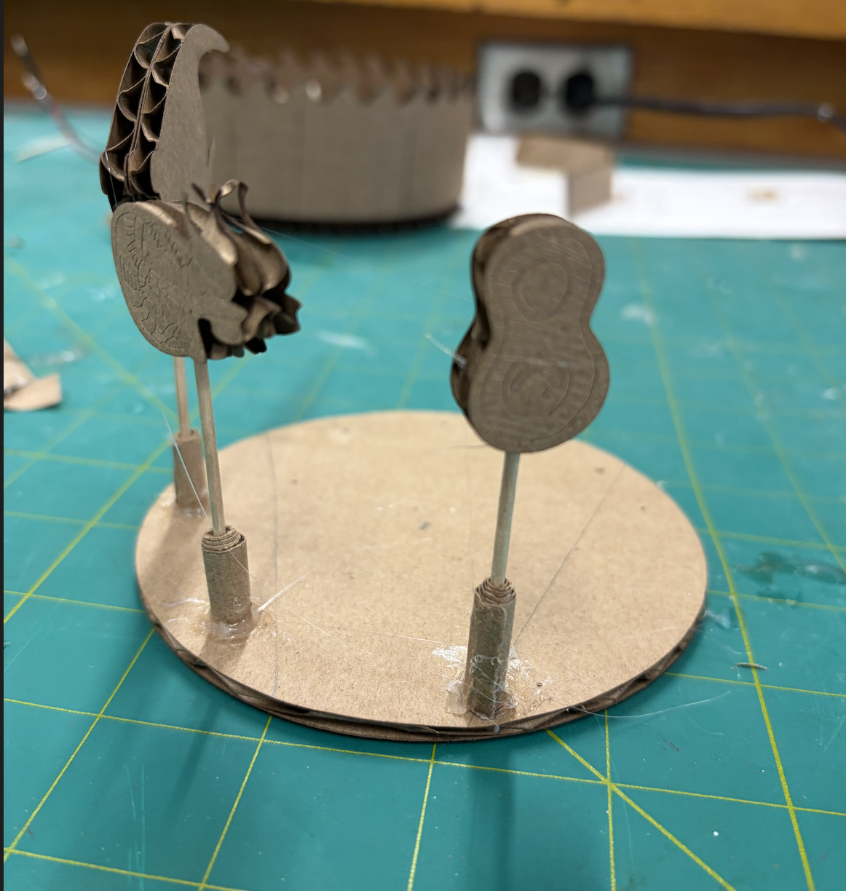

This week, we were assigned to create a kinetic sculpture. My group chose to create a mini merry-go-round, where different stages of the ocean food chain would spin around and try and eat one another. We aimed to do this by creating an outer cylinder that would act like a shell for the inside, where a disk attatched to a motor would spin. Attatched to the spinning disk would be different fish, from smallest to largest, like the food chain. We first started planning in fusion, cutting out a stand for the motor to be on.


Because boths sides of the motor would spin, and because we were only using one side, we made sure to cut a hole in our stand so the other side could spin without generating friction and slowing the merry-go-round down. Once we had created everything in fusion, we exported them as dxf files and laser cut them. We then used hotglue to attatch the sides of our cylinder to the bottom. We also used hot glue to attatch the fish to toothpicks and to attatch the toothpicks to the center spinnign disk.


Unfortunately, the current was too high, and the disk spun too fast to see the fish, and even though we calculated the resistance the circuit needed to slow it down, the resistors avaliable in the lab were too big.
And this is the final result!